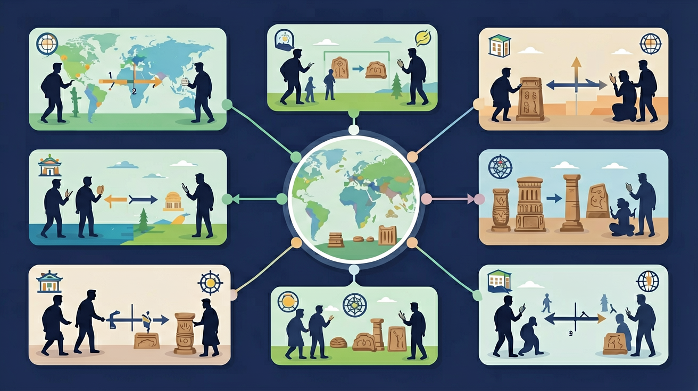

❓ 为什么说夏朝是中国第一个国家？
❓ 早期国家的国王和部落首领有啥不一样？
❓ 青铜器怎么帮我们证明早期国家的存在？
学完这一课，这些问题你都能自信地回答。
🎯 能说出早期国家形成的三个标志
🎯 能判断青铜器在国家形成中的作用
🎯 能分析分封制与部落联盟的区别
下列哪项不是早期国家形成的标志？
二里头遗址最能证明：
早期国家的形成是初中历史的重要内容。通过了解元谋人、蓝田人、北京人等旧石器时代的人类及其文化遗存，知道中国境内原始社会时期的人类活动；通过了解河姆渡、半坡、良渚、陶寺等新石器时代的文化遗存，知道中国的原始农耕生活。
了解私有制、阶级和早期国家的产生；知道考古发现是了解原始社会的重要依据；通过古代文献中记述的黄帝、炎帝等神话传说，了解其中蕴含的历史信息。
随着农业发展与剩余产品出现，社会出现贫富与等级，公共权力逐渐集中，早期国家萌芽。夏商周在文献与考古互证中被认识：都城、青铜礼器、文字与世袭王权是重要标志。
点击时代/图层按钮切换地图；悬停边界，点击城市标记查看说明。
错误一：将北京人（距今约70-20万年）与山顶洞人（距今约3万年）混为一谈。学生常因两者都发现于周口店而混淆，实际上北京人属于直立人阶段，使用打制石器，而山顶洞人已进入晚期智人阶段，掌握磨制技术和骨针缝纫。考古证据显示，北京人洞穴堆积厚达40米，包含10万件石器，而山顶洞人遗址出土了穿孔贝壳装饰品。
错误二：认为河姆渡文化（距今约7000-5000年）与半坡文化（距今约6000-5000年）属于同一类型。虽然两者都是新石器时代农耕文明，但河姆渡位于长江流域，出土大量稻谷遗存（最厚堆积达80厘米），使用榫卯结构干栏式建筑；半坡位于黄河流域，以粟作农业为主，典型半地穴房屋直径5-6米，陶器纹饰多为鱼纹图案。
错误三：误以为早期国家形成是直线进化过程。实际上良渚文化（距今5300-4300年）的11条水坝系统、反山墓地12号墓出土的6.5公斤玉琮王，显示其社会组织已具备国家特征，却比二里头文化（距今3800-3500年）更早消失。这证明早期国家形态存在区域性差异和反复性。
分析自然环境对国家形成的影响
判断早期国家，看是否有都城、礼制与文字记录，而不是用今天的国家标准去套。
常见误区：常见误区是用现代国家概念苛求古代，或把传说与考古简单一一对应。
早期国家形成的重要标志不包括？
迁移任务：找一道与「早期国家的形成」相关的练习题或生活情境，用本课方法完整解答一遍。
先独立作答，再点选项查看对错与错因。
良渚水坝工程最能说明当时
下列哪项不是国家形成的标志？
二里头遗址宫殿区与作坊区的空间分布表明
____遗址出土的青铜鼎证明夏朝可能已掌握复合范铸造技术。
答案：二里头
该遗址是探索夏文化的关键
良渚玉琮上的____纹饰可能具有宗教权力象征意义。
答案：神人兽面
反映精神信仰与权力结合
随着农业发展与剩余产品出现，社会出现贫富与等级，公共权力逐渐集中，早期国家萌芽。夏商周在文献与考古互证中被认识：都城、青铜礼器、文字与世袭王权是重要标志。
通过了解元谋人、蓝田人、北京人等旧石器时代的人类及其文化遗存，知道中国境内原始社会时期的人类活动；通过了解河姆渡、半坡、良渚、陶寺等新石器时代的文化遗存，知道中国的原始农耕生活。
把卡片拖到核心概念 / 方法技能 / 应用情境 / 常见误区。
拖完 4 项后自动判分。
（中考真题）商王武丁时期的甲骨文记载了"王作三师"，说明：
（迁移题）若某遗址发现大型宫殿基址但无文字，最能证明：
（概念辨析）分封制与部落联盟制的本质区别是：
✅ 错因1：学生常误以为国家形成是直线进步过程。实际上，良渚、哈拉帕等文明都经历过崩溃再重建。
口诀：都城青铜分封制，部落变国三标志
类比：就像游戏公会升级成公司，有了固定总部、职位分工和规章制度
复述本课两个核心概念的定义。
用本课方法分析一个新例子。
自选一个现象，用本课概念解释它并说明适用边界。
✅ 错因1：学生常误以为国家形成是直线进步过程。实际上，良渚、哈拉帕等文明都经历过崩溃再重建。